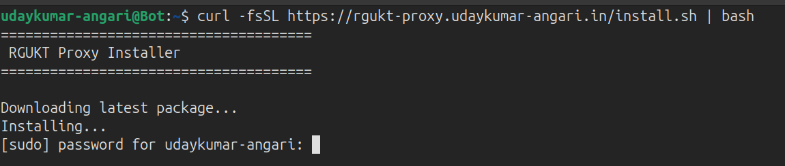
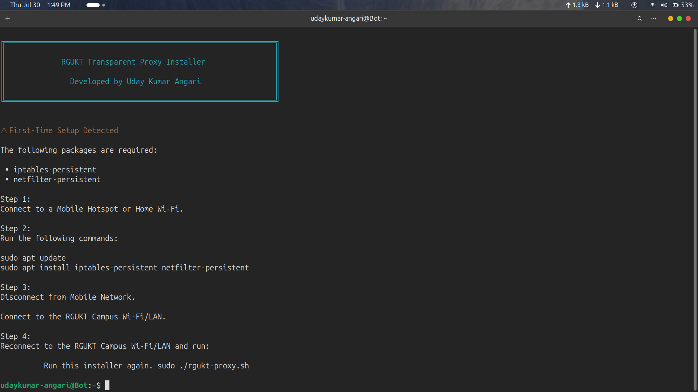
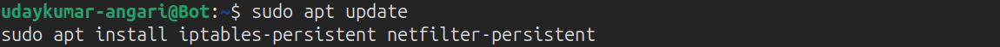
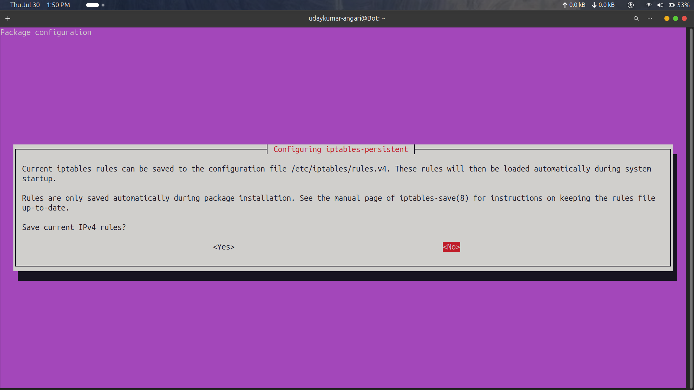
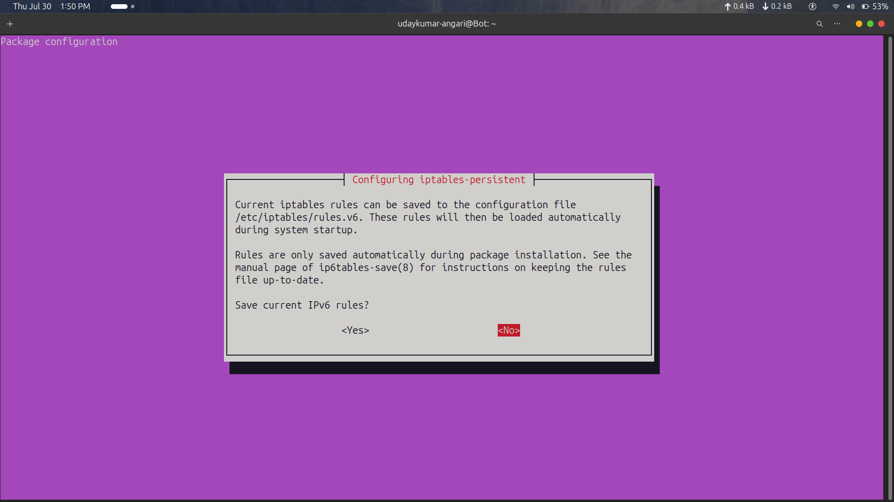
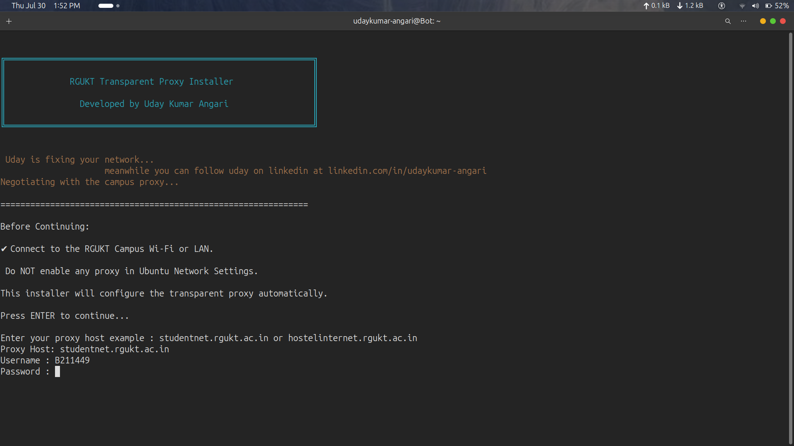
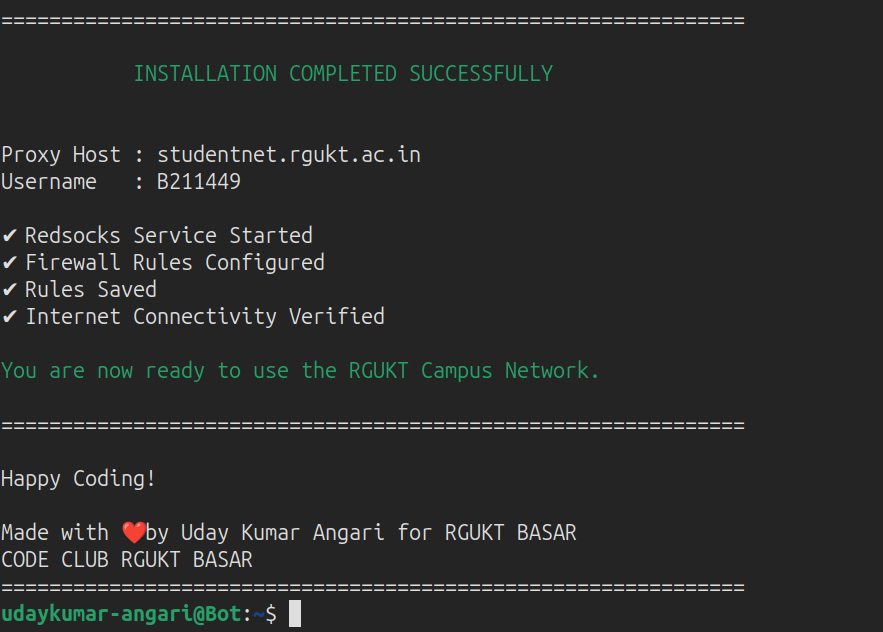

RGUKT Transparent Proxy Installer
Configure the RGUKT campus proxy on Ubuntu in minutes. Redirect all TCP traffic transparently with a single command.
curl -fsSL https://rgukt-proxy.udaykumar-angari.in/install.sh | bash
Why I Built RGUKT Proxy Installer
The story behind the project and why command line proxy configuration should not get in your way.
I was tired of terminal commands failing every single time I connected to the campus network. As a student at RGUKT Basar, the browser works fine after entering the proxy, but the moment you run git clone or npm install, everything breaks. It was incredibly frustrating.
Campus WiFi blocks standard terminal connections by default. We were all spending hours manually tweaking configurations for git, npm, docker, and ssh, only for them to fail again the next day. Classmates were literally switching back to Windows out of pure frustration.
I built RGUKT Proxy Installer to solve this once and for all. By configuring Redsocks and iptables, it transparently redirects all terminal TCP traffic through the campus proxy. Install it once, and your terminal just works.
Installation Guide
Follow these simple steps to configure the RGUKT Transparent Proxy on Ubuntu.
Install RGUKT Proxy Installer
Connect to mobile hotspot, Download and install the latest version using a single command.
curl -fsSL https://rgukt-proxy.udaykumar-angari.in/install.sh | bash

First-Time Setup
If required packages are missing, the installer will detect them automatically and display setup instructions.

Install Required Packages
Connect to a mobile hotspot or any internet connection and run:
sudo apt update
sudo apt install iptables-persistent netfilter-persistent

Save Firewall Rules
During package installation:
For IPv4: Select No.
For IPv6: Select No.


Configure the Campus Proxy
Reconnect to the RGUKT Campus Wi-Fi/LAN , turn on proxy with respective host ex : studentnet.rgukt.ac.in or hostelinternet.rgukt.ac.in and run:
rgukt-proxy
Enter:
• Proxy Host
• Username
• Password
The installer automatically configures Redsocks, firewall rules, persistence, and verifies internet connectivity.

Installation Complete
Once the installation finishes successfully, you can run any command line tools like Git, npm, or Docker on the RGUKT Campus Network without manual proxy configurations.

What Gets Configured?
A breakdown of the system configurations applied by the installer to keep your proxy functioning smoothly.
Redsocks Proxy
Automatically constructs and maintains your
/etc/redsocks.conf with server endpoints and authentication hashes.
iptables Rules
Redirects outer TCP traffic seamlessly to port 12345 while excluding local networks (127.0.0.0/8, 10.0.0.0/8, etc.) to keep internal connections intact.
Persistent Firewall
Saves all routing and iptables rule configurations permanently using
netfilter-persistent so your internet works seamlessly after power cycles.
Systemd Startup Service
Installs an override script to verify the system network is fully connected before starting Redsocks, avoiding silent boot failures.
Automatic Connectivity Test
Directly audits the configured tunnel against external repositories like npm registry to immediately verify authentication status.
Zero Manual Proxy Configuration
Interactive step-by-step assistant requesting host IP, password, and proxy credentials with clean warnings, diagnostics, and banners.
"Built to help every RGUKT Linux user spend less time configuring proxies and more time building great software."